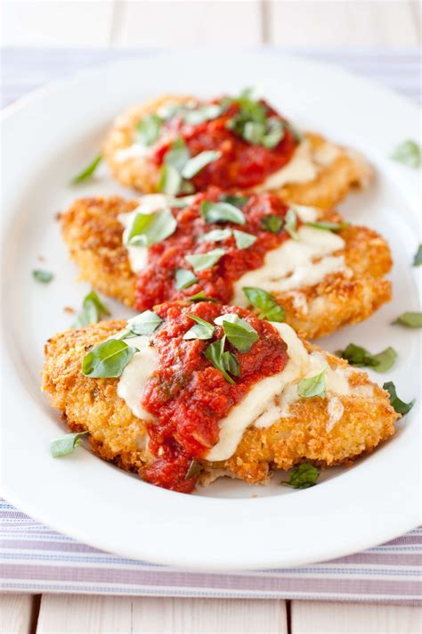

Hopepage
Chicken Parm

Chicken Parm Recipe
This is an easy to make Chicken Parm recipe that the whole family will love (if you don't eat it all yourself)!
Ingredients
- cooking spray
- 1(16 ounce) package skinless, boneless chicken breats
- 4 slices Fresh Mozzarella Cheese BC
- 2 cups tomato sauce, or to taste
Steps
- Preheat the oven to 375 degrees F (190 degrees C). Spray a baking pan with cooking spray. Place chicken on the prepared pan.
- Bake in the preheated oven for 20 minutes, flipping chicken after 12 minutes. Remove from the oven, add desired amount of sauce, and top each breast with mozzarella cheese.
- Bake until cheese is melted and chicken is no longer pink in the center and the juices run clear, about 12 more minutes. An instant-read thermometer inserted into the center should read at least 165 degrees F (74 degrees C).